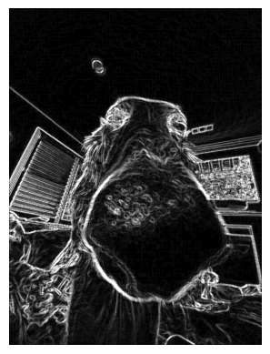
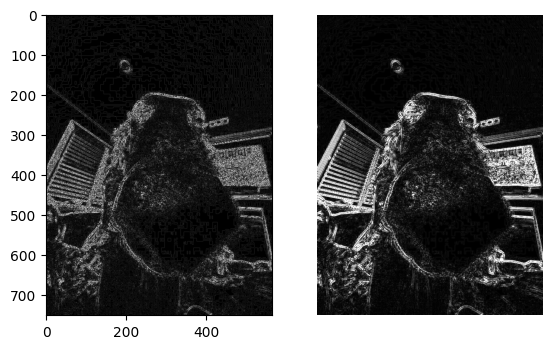
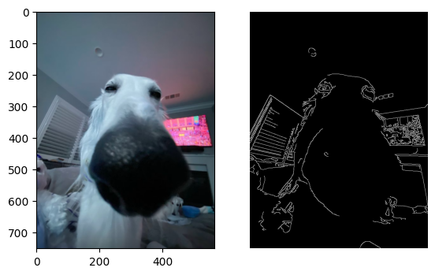
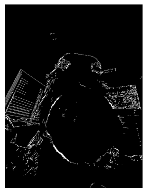

Dérivées d'image : Sobel et Scharr
Pour détecter les bords d'une image, on calcule les dérivées horizontales et verticales de l'image. Deux fonctions classiques sont disponibles :
- Sobel() : calcule les dérivées avec un kernel simple.
- Scharr() : calcule des dérivées plus précises avec un kernel de taille 3x3.
Principe général
On effectue une convolution d'un kernel \(K\) (de taille impaire \(n \times n\)) avec l'image \(I\) : \[ G = K * I \]
La convolution consiste à glisser un petit tableau de poids (le kernel) sur l’image, et pour chaque pixel, on fait une somme pondérée des pixels voisins : \[ G_{x} = K_x * I \quad\text{(horizontal)}, \quad G_{y} = K_y * I \quad\text{(vertical)} \]
Puis, pour chaque pixel, on calcule la norme du gradient : \[ G = \sqrt{G_x^2 + G_y^2} \]
Kernels classiques
Sobel 3x3 : \[ K_x = \begin{bmatrix} -1 & 0 & 1\\ -2 & 0 & 2\\ -1 & 0 & 1 \end{bmatrix}, \quad K_y = \begin{bmatrix} -1 & -2 & -1\\ 0 & 0 & 0\\ 1 & 2 & 1 \end{bmatrix} \]
Scharr 3x3 : \[ K_x = \begin{bmatrix} -3 & 0 & 3\\ -10 & 0 & 10\\ -3 & 0 & 3 \end{bmatrix}, \quad K_y = \begin{bmatrix} -3 & -10 & -3\\ 0 & 0 & 0\\ 3 & 10 & 3 \end{bmatrix} \]
Exemple de calcul de bord
Si deux pixels voisins ont des intensités très différentes, par exemple \(I_1 = 255\) et \(I_2 = 10\), alors la différence absolue : \[ |I_1 - I_2| = 245 \] indique la présence d'un bord.
La matrice \([-1\ 0\ 1]\) est la matrice de dérivation de base ; on augmente sa taille ou on utilise un kernel plus large pour réduire le bruit en faisant une moyenne pondérée des pixels voisins.
Exemple de dérivé
Dérivé avec Scharr
Partie opérateur Sobel & Scharr Python
import cv2 as cv
import matplotlib.pyplot as plt
import numpy as np
scale = 1 #facteur multiplicatif appliqué au gradient calculé.
delta = 0 #valeur ajoutée au résultat final.
ddepth = cv.CV_16S # profoneur de l'image, ici signed 16-bit >> On utilise une profondeur plus grande pour éviter la perte d'information lors des calculs de gradient.
src = cv.imread('stare.jpg', cv.IMREAD_COLOR) # load l'image
src = cv.GaussianBlur(src, (3, 3), 0) # pour réduire le bruit et éviter les erreurs lors de la détection de bords --> 0 = écart-type (sigma) en X et Y
gray = cv.cvtColor(src, cv.COLOR_BGR2GRAY) # on met en teinte de gris
#grad_x = cv.Sobel(gray, ddepth, 1, 0, ksize=3, scale=scale, delta=delta, borderType=cv.BORDER_DEFAULT)
#grad_y = cv.Sobel(gray, ddepth, 0, 1, ksize=3, scale=scale, delta=delta, borderType=cv.BORDER_DEFAULT)
grad_x = cv.Scharr(gray,ddepth,1,0) #This is as fast but more accurate than the standard Sobel function.
grad_y = cv.Scharr(gray,ddepth,0,1)
abs_grad_x = cv.convertScaleAbs(grad_x) #convertit les gradients signés en valeurs absolues non signées 8-bit pour pouvoir afficher (valeurs positives entre 0 et 255).
abs_grad_y = cv.convertScaleAbs(grad_y) # Mega important il prend la abs de la variation des bords
grad = cv.addWeighted(abs_grad_x, 0.5, abs_grad_y, 0.5, 0)#Combine les gradients avec un poids de 0.5 chacun pour obtenir une image finale des bords dans toutes les directions.
# le 0 est une valeur a add a la fin ( + grand + claire)
plt.imshow(grad, cmap = 'gray')
plt.axis('off') # Hide axes
plt.show()
Dérive seconde (de Laplace)
Le Laplacien est un opérateur différentiel qui mesure la variation d’intensité dans toutes les directions. Il est basé sur la **dérivée seconde** et est très sensible aux changements rapides d’intensité, donc aux bords.
Convolution avec un kernel
On calcule la convolution de l’image \(I\) avec un kernel \(K\) pour obtenir le Laplacien : \[ L = K * I \]
Kernel du Laplacien (exemple 3x3)
Kx : \[ K_x = \begin{bmatrix} 0 & 1 & 0 \\ 1 & -4 & 1 \\ 0 & 1 & 0 \end{bmatrix} \]
Ky : (optionnel pour direction verticale ou diagonales) \[ K_y = \begin{bmatrix} 1 & 0 & 1 \\ 0 & -4 & 0 \\ 1 & 0 & 1 \end{bmatrix} \]
Chaque pixel de la nouvelle image \(L\) est obtenu en faisant la somme pondérée des pixels voisins selon le kernel. Les valeurs négatives indiquent des transitions vers des intensités plus faibles et les valeurs positives vers des intensités plus élevées. Les bords apparaissent donc comme des zones avec des valeurs extrêmes.
Contrairement à Sobel ou Scharr, le Laplacien ne fournit pas de direction du gradient ; il met en évidence les zones de variation rapide d’intensité.
Exemple
Dérivé seconde respectivement avec Laplacian() et 2 x Sobel()
Partie Laplace Python
grad_xx = cv.Sobel(gray, cv.CV_64F, 2, 0, ksize=5) # ∂²/∂x²
grad_yy = cv.Sobel(gray, cv.CV_64F, 0, 2, ksize=5) # ∂²/∂y²
laplacian_manual = grad_xx*0.5 + grad_yy*0.5
abs_dst_manu = cv.convertScaleAbs(laplacian_manual)
laplacian = cv.Laplacian(gray, cv.CV_64F, ksize=3)
# converting back to uint8
abs_dst = cv.convertScaleAbs(laplacian)
plt.subplot(121)
plt.imshow(abs_dst*5, cmap='gray')
plt.subplot(122)
plt.imshow(abs_dst_manu, cmap='gray')
plt.axis('off')
plt.show()
Détecteur de bords Canny
Le détecteur de Canny est considéré comme un détecteur de bords optimal. Il combine plusieurs étapes pour extraire les contours d'une image de manière précise et robuste au bruit.
Calcul du gradient
Comme pour Sobel, on calcule les dérivées horizontales \(G_x\) et verticales \(G_y\) via une convolution : \[ G_x = K_x * I, \quad G_y = K_y * I \]
Puis on calcule la magnitude du gradient et la direction du bord : \[ G = \sqrt{G_x^2 + G_y^2}, \quad \Theta = \arctan\left(\frac{G_y}{G_x}\right) \]
La direction \(\Theta\) est ensuite arrondie à 0°, 45°, 90° ou 135° pour simplifier l'analyse des bords.
Non-maximum suppression
Chaque pixel est comparé à ses voisins le long de la direction du gradient. Si le pixel n’est pas un maximum local, il est supprimé (mis à zéro). Cela permet d’obtenir des bords fins d’une seule pixel de largeur.
Double seuillage (Hysteresis)
On définit deux seuils : low et high (typiquement ratio entre 2:1 et 3:1).
- Si la magnitude du gradient du pixel est > high → pixel considéré comme bord.
- Si < low → pixel rejeté.
- Si entre low et high → pixel conservé seulement s’il est connecté à un pixel déjà considéré comme bord.
Cette technique de double seuil permet d’éliminer le bruit tout en conservant la continuité des bords.
Exemple
Dérivé Canny()
Partie Canny Python
detected_edges = cv.Canny(gray, 50,50*3, 3) #cv.Canny(img_blur, thresh_bas, thresh_haut,ksize)
mask = detected_edges != 0 # On crée un masque booléen : True là où un bord a été détecté (!= 0), et False ailleurs. --> deja "fini"
dst = src * (mask[:,:,None].astype(src.dtype)) # prend image de base et on la passe devant le mask (mis en dimension 3 pour pouvoir faire multiplication) >> pour avoir couleurs image de base
print(src.shape)
plt.subplot(121)
plt.imshow(src)
plt.subplot(122)
plt.imshow(mask, cmap='gray')
plt.axis('off')
plt.show()
Manuellement
Dérivé Canny()
Partie Canny Manuel Python
magnitude = grad
theta = np.arctan2(grad_y, grad_x) * 180 / np.pi # en degres
theta[theta < 0] += 180 # On garde les angles entre 0° et 180°
nms = np.zeros_like(magnitude) # tableau de 0 de mm forme que magnitude
for i in range(1, magnitude.shape[0] - 1):
for j in range(1, magnitude.shape[1] - 1):
angle = theta[i, j]
q = 255
r = 255
# Approximer l'angle pour comparer les bons voisins
if (0 <= angle < 45) :
q = magnitude[i, j + 1]
r = magnitude[i, j - 1]
elif 45 <= angle < 90:
q = magnitude[i + 1, j - 1]
r = magnitude[i - 1, j + 1]
elif 90 <= angle < 135:
q = magnitude[i + 1, j]
r = magnitude[i - 1, j]
elif 135 <= angle < 180:
q = magnitude[i - 1, j - 1]
r = magnitude[i + 1, j + 1]
if magnitude[i, j] >= q and magnitude[i, j] >= r:
nms[i, j] = magnitude[i, j]
else:
nms[i, j] = 0
low_thresh = 100
high_thresh = 200
#double seuillage
res = np.zeros_like(nms)
strong = 255
weak = 50
strong_i, strong_j = np.where(nms >= high_thresh)
weak_i, weak_j = np.where((nms >= low_thresh) & (nms < high_thresh))
res[strong_i, strong_j] = strong
res[weak_i, weak_j] = weak
# connexion bords faibles
for i in range(1, res.shape[0] - 1):
for j in range(1, res.shape[1] - 1):
if res[i, j] == weak:
if np.any(res[i-1:i+2, j-1:j+2] == strong):
res[i, j] = strong
else:
res[i, j] = 0
plt.imshow(res, cmap = 'gray')
plt.axis('off') # Hide axes
plt.show()